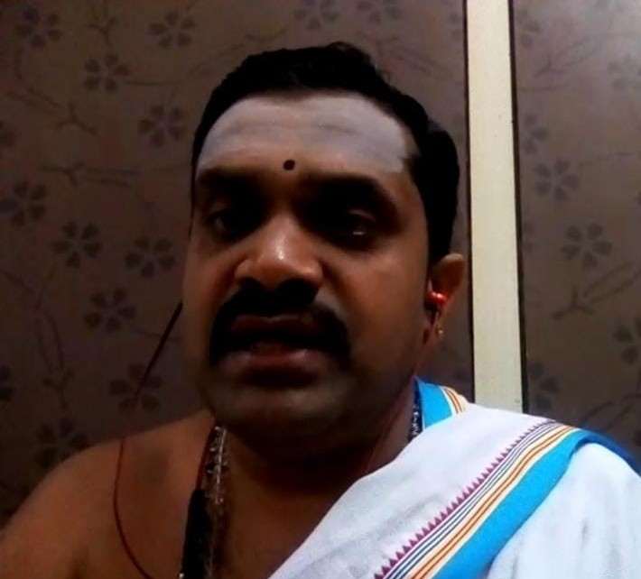

ಪಾಠಶಾಲೆಯ ಪರಿಚಯ
ಪ್ರಾಚಾರ್ಯ ನುಡಿ
ದೃಷ್ಟಿ ಮತ್ತು ಗುರಿ
ಶ್ರೀ ಸುರವರ ಸೇವಾ ಪ್ರತಿಷ್ಠಾನ
ಪಾಠಶಾಲೆಯ ಪರಿಚಯ

ಸನಾತನ ಧರ್ಮದ ಅನುಯಾಯಿಗಳಿಗೆ ಹಾಗೂ ವೇದಾಸಕ್ತರಿಗೆ ಅನುಕೂಲ ವಾಗುವಂತೆ, ಋಗ್ವೇದಿಯ ಹಾಗೂ ಯುಜುರ್ವೇದಿಯ ಉಪಯುಕ್ತ
ಮಂತ್ರಗಳನ್ನು
ಕಲಿಸುವುದರೊಂದಿಗೆ, ನಿತ್ಯ ಅನುಷ್ಟಾನಕ್ಕೆ ಅಗತ್ಯವಿರುವ ಸಂಧ್ಯಾವಂದನೆ, ನಿತ್ಯ ದೇವತಾರ್ಚನೆ ಇತ್ಯಾದಿಗಳ ಮಂತ್ರ ಭಾಗ ಮತ್ತು
ವಿಧಿ
ವಿಧಾನಗಳನ್ನು ಹೇಳಿಕೊಡ ಲಾಗುವುದು ಹಾಗೂ ವೇದದ ಅಂಗವೆಂದು ಕರೆಯಿಸಿಕೊಳ್ಳುವ ಜ್ಯೋತಿಷ ಜ್ಞಾನವನ್ನು ಹೇಳಿಕೊಡುವ ತರಗತಿಗಳನ್ನು
ಸಹ
ಪಾಠಶಾಲವತಿಯಿಂದ ಆಯೋಜಿಸಲಾಗಿದೆ.
ಅಗ್ನಿಕಾರ್ಯ, ಬ್ರಹ್ಮಯಜ್ಞ, ಔಪಾಸನೆ ಇತ್ಯಾದಿ ಅನುಷ್ಠಾನಗಳನ್ನು ಕಲಿಸುವುದು. ಮುಖ್ಯವಾಗಿ ಅಪೌರುಷೇಯವಾದ ವೇದ ಜ್ಞಾನವನ್ನು ಆಸಕ್ತರಿಗೆ ಸುಲಭವಾಗಿ ತಲುಪಿಸುವ ಪ್ರಯತ್ನವು ಶ್ರೀ ಸನಾತನ ವೇದ ಪಾಠ ಶಾಲೆಯ ಉದ್ದೇಶ ಮತ್ತು ಗುರಿಯಾಗಿರುತ್ತದೆ.
ಶ್ರೀ ಸನಾತನ ವೇದಪಾಠ ಶಾಲೆಯು ದಿನಾಂಕ 26-01-2018 ರಂದು ಬೆಂಗಳೂರಿನ ಉತ್ತರ ತಾಲ್ಲೂಕಿನಲ್ಲಿರುವ ವಿದ್ಯಾರಣ್ಯಪುರದಲ್ಲಿ, ವೇದಪುರುಷನ ಅನುಗ್ರಹದಿಂದ ಶುಭಾರಂಭವಾಯಿತು.
ಈ ವೇದಪಾಠಶಾಲೆಯ ಪ್ರವರ್ತಕರಾದ ವೇ || ಬ್ರ || ಶ್ರೀ ಹರೀಶ್ ಶರ್ಮರವರು (ಶೈವಾಗಮ ಪ್ರವೀಣ) ಆದಿಯಲ್ಲಿ ಗುರುಮುಖೇನ ಪದ್ಧತಿಯಲ್ಲಿ ವೇದಪಾಠವನ್ನು ಆರಂಭಿಸಿದ ಇವರು ಪ್ರಸ್ತುತ ಅಂತರ್ಜಾಲದ - ONLINE ಮುಖಾಂತರವೂ ಈ ಕೆಳಕಂಡ ವೇದ ಶಿಕ್ಷಣವನ್ನು ಹೇಳಿಕೊಡುತ್ತಿದ್ದಾರೆ.
ಅಗ್ನಿಕಾರ್ಯ, ಬ್ರಹ್ಮಯಜ್ಞ, ಔಪಾಸನೆ ಇತ್ಯಾದಿ ಅನುಷ್ಠಾನಗಳನ್ನು ಕಲಿಸುವುದು. ಮುಖ್ಯವಾಗಿ ಅಪೌರುಷೇಯವಾದ ವೇದ ಜ್ಞಾನವನ್ನು ಆಸಕ್ತರಿಗೆ ಸುಲಭವಾಗಿ ತಲುಪಿಸುವ ಪ್ರಯತ್ನವು ಶ್ರೀ ಸನಾತನ ವೇದ ಪಾಠ ಶಾಲೆಯ ಉದ್ದೇಶ ಮತ್ತು ಗುರಿಯಾಗಿರುತ್ತದೆ.
ಶ್ರೀ ಸನಾತನ ವೇದಪಾಠ ಶಾಲೆಯು ದಿನಾಂಕ 26-01-2018 ರಂದು ಬೆಂಗಳೂರಿನ ಉತ್ತರ ತಾಲ್ಲೂಕಿನಲ್ಲಿರುವ ವಿದ್ಯಾರಣ್ಯಪುರದಲ್ಲಿ, ವೇದಪುರುಷನ ಅನುಗ್ರಹದಿಂದ ಶುಭಾರಂಭವಾಯಿತು.
ಈ ವೇದಪಾಠಶಾಲೆಯ ಪ್ರವರ್ತಕರಾದ ವೇ || ಬ್ರ || ಶ್ರೀ ಹರೀಶ್ ಶರ್ಮರವರು (ಶೈವಾಗಮ ಪ್ರವೀಣ) ಆದಿಯಲ್ಲಿ ಗುರುಮುಖೇನ ಪದ್ಧತಿಯಲ್ಲಿ ವೇದಪಾಠವನ್ನು ಆರಂಭಿಸಿದ ಇವರು ಪ್ರಸ್ತುತ ಅಂತರ್ಜಾಲದ - ONLINE ಮುಖಾಂತರವೂ ಈ ಕೆಳಕಂಡ ವೇದ ಶಿಕ್ಷಣವನ್ನು ಹೇಳಿಕೊಡುತ್ತಿದ್ದಾರೆ.
- ವೇದಮಂತ್ರಗಳನ್ನು ಮತ್ತು ನಿತ್ಯ ದೇವತಾರ್ಚನೆಯನ್ನು ಕಲಿಸುವುದು
- ಜ್ಯೋತಿಷ್ಯ ಶಾಸ್ತ್ರ ಮತ್ತು ವಾಸ್ತು ಶಾಸ್ತ್ರಗಳನ್ನು ಕಲಿಸುವುದು
- ಯೋಗಾಸನ ಮತ್ತು ಪ್ರಾಣಯಾಮ ತರಗತಿಗಳನ್ನು ನಡೆಸುವುದು
- ಸಂಸ್ಕೃತ ವ್ಯಾಕರಣ ಶಿಕ್ಷಣ ಮತ್ತು ಕನ್ನಡ ವ್ಯಾಕರಣ ಶಿಕ್ಷಣ ಹೇಳಿಕೊಡುವುದು
- ಹತ್ತು ವರ್ಷದ ಕೆಳಗಿನ ಮಕ್ಕಳಿಗೆ ಬಾಲಬೋದ ಇತ್ಯಾದಿಗಳನ್ನು ಕಲಿಸುವುದು
- ಅಗ್ನಿಕಾರ್ಯ ಮತ್ತು ಔಪಾಸನೆ (ಅಗ್ನಿಯೋತ್ರ)
- ವ್ರತ ಹಬ್ಬ ಹರಿದಿನಗಳ ಆಚರಣೆ ಮತ್ತು ಅವುಗಳ ಮಹತ್ವಗಳನ್ನು ಕಲಿಸುವುದು
- ಷೋಡಷ [ಹದಿನಾರು] ಧಾರ್ಮಿಕ ಸಂಸ್ಕಾರಗಳನ್ನು ಕಲಿಸುವುದು
- ಸ್ತ್ರೋತ್ರ ಮತ್ತು ಶ್ಲೋಕಗಳನ್ನು ಕಲಿಸುವುದು
- ಪೌರೋಹಿತ್ಯ ಸೇವೆಯನ್ನು ಒದಗಿಸುವುದು
ವೇ||ಬ್ರ||ಶ್ರೀ ಹರೀಶ ಶರ್ಮ
ಸನಾತನ ಧರ್ಮದ ಒಂದು ಉನ್ನತವಾದ ಪರಿಕಲ್ಪನೆಯೇ ಕರ್ಮಸಿದ್ಧಾಂತ. ಕರ್ಮದಿಂದಲೇ ಮಾನವನಿಗೆ ಭಗವಂತನ ದಯೆ ಹಾಗೂ ಸಕಲ ಸಿದ್ಧಿಗಳೂ
ಪ್ರಾಪ್ತವಾಗುತ್ತವೆ. ನಾವು ಮಾಡುವ ಸತ್ಕರ್ಮ ಹಾಗೂ ದುಷ್ಕರ್ಮಗಳ ಆಧಾರದಮೇಲೆನಾನ ರೀತಿಯ ಫಲಗಳನ್ನು ನಾವು
ಅನುಭವಿಸಬೇಕಾಗುತ್ತದೆ. ಮಾನವ ಜನ್ಮವು ನಾವು ಮಾಡಿರುವ ಪಾಪಗಳನ್ನು ಕಳೆದುಕೊಳ್ಳಲು ಇರುವ ಒಂದು ಮಾಧ್ಯಮ ಹಾಗೂ ಪಾಪ
ಕಳೆದುಕೊಳ್ಳುವುದಕ್ಕೆ (ಧರ್ಮೇಣ ಪಾಪಮ್ ಅಪನುದತಿ ಎಂಬಂತೆ) ಧರ್ಮಕಾರ್ಯವೇ ಸಾಧನ. ಧರ್ಮಾಧರ್ಮಗಳ ನಿರ್ಧಾರಕ್ಕೆ ಇರುವುದೇ
ಶಾಸ್ತ್ರದ ಆಧಾರ. ಹೀಗೆ ಕರ್ಮ ಮತ್ತು ಧರ್ಮಗಳ ಅಚರಣೆಯೇ ಸನಾತನ ಧರ್ಮ ಪ್ರತಿಪಾದಿಸುವ ಧ್ಯೇಯ. "ಕರ್ಮಚ ಉಪಾತ್ತ
ದುರಿತಕ್ಷಯಾರ್ಥಮ್” ಎಂದು ಶ್ರೀ ಶಂಕರಾಚಾರ್ಯರು ಹೇಳಿರುವ ಹಾಗೆ ಜನ್ಮಜ್ಮಾಂತರ ದುರಿತಗಳನ್ನು ನೀಗಿಸಿಕೊಳ್ಳುವ ಕರ್ಮಗಳೇ ನಿತ್ಯ
ಕರ್ಮಗಳೆನಿಕೊಂಡಿವೆ.
"ಸ್ವಕರ್ಮಣಾ ತಮಭ್ಯರ್ಚ್ಯ ಸಿದ್ಧಿಂ ವಿಂದತಿ ಮಾನವಃ", "ಕುರ್ವನ್ನೇವೇಹ ಕರ್ಮಾಣಿ” ಇತ್ಯಾದಿ ವಾಕ್ಯಗಳನ್ನು ಭಗವದ್ಗೀತೆ ಮತ್ತು ಉಪನಿಷತ್ತುಗಳು ಕರ್ಮಾನುಷ್ಠಾನ ಗಳನ್ನು ಕುರಿತು ಹೇಳುತ್ತವೆ. ಆದ್ದರಿಂದ ನಿತ್ಯಕರ್ಮವಾದ ಸಂಧ್ಯಾವಂದನೆಯನ್ನು ಮಾಡಬೇಕು ಎಂದು ಶಾಸ್ತ್ರಗಳಿಂದ ತಿಳಿಯುತ್ತದೆ. ಕಾಲ ಕಾಲಕ್ಕೆ ಸಂಧ್ಯಾವಂದನೆ ಮಾಡುವುದರಿಂದ ಇತರ ಕರ್ಮಗಳ ಫಲವೂ ಹೆಚ್ಚು ಮತ್ತು ಸಂಧ್ಯಾವಂದನೆ ಮಾಡದ ಇತರ ಯಾವ ಕರ್ಮಗಳೂ ಫಲಿಸುವುದಿಲ್ಲ ಎಂದು ಶಾಸ್ತ್ರ ತಿಳಿಸುತ್ತದೆ. ಸಂಧ್ಯಾವಂದನೆಯಿಂದ ಕಾಯದೋಷ, ವಾಕ್ದೋಷ ಮತ್ತು ಮನೋರೊಗಗಳೂ ನಿವಾರಣೆಯಾಗುತ್ತವೆ. ಸಂಧ್ಯಾವಂದನೆ ಮಾನವರನ್ನು ದೈಹಿಕವಾಗಿ ಮತ್ತು ಮಾನಸಿಕವಾಗಿ ದೃಢರನ್ನಾಗಿ ಮಾಡುತ್ತದೆ.
"ಸ್ವಕರ್ಮಣಾ ತಮಭ್ಯರ್ಚ್ಯ ಸಿದ್ಧಿಂ ವಿಂದತಿ ಮಾನವಃ", "ಕುರ್ವನ್ನೇವೇಹ ಕರ್ಮಾಣಿ” ಇತ್ಯಾದಿ ವಾಕ್ಯಗಳನ್ನು ಭಗವದ್ಗೀತೆ ಮತ್ತು ಉಪನಿಷತ್ತುಗಳು ಕರ್ಮಾನುಷ್ಠಾನ ಗಳನ್ನು ಕುರಿತು ಹೇಳುತ್ತವೆ. ಆದ್ದರಿಂದ ನಿತ್ಯಕರ್ಮವಾದ ಸಂಧ್ಯಾವಂದನೆಯನ್ನು ಮಾಡಬೇಕು ಎಂದು ಶಾಸ್ತ್ರಗಳಿಂದ ತಿಳಿಯುತ್ತದೆ. ಕಾಲ ಕಾಲಕ್ಕೆ ಸಂಧ್ಯಾವಂದನೆ ಮಾಡುವುದರಿಂದ ಇತರ ಕರ್ಮಗಳ ಫಲವೂ ಹೆಚ್ಚು ಮತ್ತು ಸಂಧ್ಯಾವಂದನೆ ಮಾಡದ ಇತರ ಯಾವ ಕರ್ಮಗಳೂ ಫಲಿಸುವುದಿಲ್ಲ ಎಂದು ಶಾಸ್ತ್ರ ತಿಳಿಸುತ್ತದೆ. ಸಂಧ್ಯಾವಂದನೆಯಿಂದ ಕಾಯದೋಷ, ವಾಕ್ದೋಷ ಮತ್ತು ಮನೋರೊಗಗಳೂ ನಿವಾರಣೆಯಾಗುತ್ತವೆ. ಸಂಧ್ಯಾವಂದನೆ ಮಾನವರನ್ನು ದೈಹಿಕವಾಗಿ ಮತ್ತು ಮಾನಸಿಕವಾಗಿ ದೃಢರನ್ನಾಗಿ ಮಾಡುತ್ತದೆ.
ಪಾಠಶಾಲೆಯ ಗುರಿ
ಸನಾತನ ಧರ್ಮದ ಅನುಯಾಯಿಗಳಿಗೆ ಹಾಗೂ ವೇದಾಸಕ್ತರಿಗೆ ಅನುಕೂಲವಾಗುವಂತೆ ಋಗ್ವೇದಿಯ ಹಾಗೂ ಯಜುರ್ವೇದೀಯ ಉಪಯುಕ್ತ ಮಂತ್ರಗಳನ್ನು
ಕಲಿಸುವುದು. ಇದರ ಜೊತೆಗೆ ನಿತ್ಯ ಅನುಷ್ಠಾನಕ್ಕೆ ಅಗತ್ಯವಿರುವ ಸಂಧ್ಯಾವಂದನೆ ,ನಿತ್ಯದೇವತಾರ್ಚನೆ ಇತ್ಯಾದಿಗಳ ಮಂತ್ರಭಾಗ
ಮತ್ತು
ವಿಧಿ ವಿಧಾನಗಳನ್ನು ಹೇಳಿಕೊಡುವುದಾಗಿದೆ.ಇದರ ಜೊತೆಗೆ ವೇದದ ಅಂಗವೆಂದು ಕರೆಯಿಸಿಕೊಳ್ಳುವ ಜ್ಯೋತಿಷ ಜ್ಞಾನವನ್ನು ಹೇಳಿಕೊಡುವ
ತರಗತಿಗಳನ್ನೂ ಪಾಠಶಾಲಾವತಿಯಿಂದ ಆಯೋಜಿಸಲಾಗಿದೆ.ಇದರ ಜೊತೆಗೆ ಅಗ್ನಿಕಾರ್ಯ, ಬ್ರಹ್ಮಯಜ್ಙ , ಔಪಾಸನೆ ಇತ್ಯಾದಿ
ಅನುಷ್ಟಾನಗಳನ್ನು
ಹೇಳಿಕೊಡುವುದ್ದಾಗಿದೆ. ಮುಖ್ಯವಾಗಿ, ಅಪೌರುಷೇಯವಾದ ವೇದ ಜ್ಞಾನವನ್ನು ಆಸಕ್ತರಿಗೆ ಸುಲಭವಾಗಿ ತಲುಪಿಸುವ ಪ್ರಯತ್ನ ಶ್ರೀ ಸನಾತನ
ವೇದಪಾಠಶಾಲೆಯ ಉದ್ದೇಶ ಮತ್ತು ಗುರಿ.
ಪಾಠಶಾಲೆಯ ದೃಷ್ಟಿ
ವೇದಾಸಕ್ತರಿಗೆ ಮತ್ತು ಯುವ ಪೀಳಿಗೆಗೆ ಸುಲಭವಾಗಿ ವೇದಮಂತ್ರಗಳನ್ನು ಮತ್ತು ದೈನಂದಿನ ಅನುಷ್ಠಾನಗಳನ್ನು , ವ್ರತ , ಹಬ್ಬ
ಹರಿದಿನಗಳ
ಆಚರಣೆ ಮತ್ತು ಅವುಗಳ ಮಹತ್ವಗಳು , ಸನಾತನ ಧರ್ಮ ಕುರಿತ ವಿಚಾರಗಳು, ಸಂಸ್ಕೃತ ಶಿಕ್ಷಣ ,ಯೋಗಾಸನ ಮತ್ತು ಪ್ರಾಣಾಯಾಮ
ತರಬೇತಿ,ಸ್ತೋತ್ರ ಮತ್ತು ಶ್ಲೋಕಗಳು, ಬಾಲಬೊಧ ,ಪ್ರಕೃತಿ ಚಿಕಿತ್ಸೆ ಇತ್ಯಾದಿಗಳನ್ನು ಕಲಿಸುವುದು. ಜೊತೆಗೆ, ದೇವಾಲಯಾದಿ
ನಿರ್ಮಾಣ,
ಗೋಶಾಲೆ ಮತ್ತು ವೈದೀಕ ಧರ್ಮಶಾಲೆಗಳ ನಿರ್ಮಾಣ ಮಾಡುವುದು. ಇದರ ಸಲುವಾಗಿ ವೇದಿಕೆಯನ್ನು ಮಾಡಿ ಯಥಾಶಕ್ತಿ ಧರ್ಮ ಪ್ರಬೋಧ
ಮಾಡುವುದು
ನಮ್ಮ ಪಾಠಶಾಲೆಯ ದೃಷ್ಟಿ.
ನೋಂದಣಿ: 195/2018-19-2018
ನಂ.19, ನಕ್ಕನಹಳ್ಳಿ ಗ್ರಾಮ, ಶ್ರೀರಾಂಪುರ ಅಂಚೆ, ನಂದಿ ಹೋಬಳಿ, ಚಿಕ್ಕಬಳ್ಳಾಪುರ
ತಾಲ್ಲೂಕು, ಚಿಕ್ಕಬಳ್ಳಾಪುರ
ಜಿಲ್ಲೆ – 562 101
ದೂರವಾಣಿ ಸಂಖ್ಯೆ: 8277221561
ಪ್ರತಿಷ್ಠಾನದ ಉದ್ದೇಶ
ಭವಿಷ್ಯದ ಪೀಳಿಗೆಗೆ ವೈದಿಕ ಜ್ಞಾನವನ್ನು ವರ್ಗಾವಣೆ ಮಾಡುವುದನ್ನು ಖಾತ್ರಿಪಡಿಸುವುದಕ್ಕೆ ಸನಾತನ ಧರ್ಮದ ವಿವಿಧ ಶಾಖೆಗಳಿಗೆ
ಸಾಮಾನ್ಯ ವೇದಿಕೆಯನ್ನು ರೂಪಿಸುವುದು ಮತ್ತು ವಿವಿಧ ಧಾರ್ಮಿಕ ಚಟುವಟಿಕೆಗಳನ್ನು ಪ್ರೋತ್ಸಾಹಿಸಲು ವೇದ ಪಾಠ ಶಾಲೆ, ಗೋಶಾಲೆ,
ಯಜ್ಞ ಮಂಟಪ, ಷೋಡಷ ಸಂಸ್ಕಾರಗಳು, ಅಗ್ನಿಕಾರ್ಯ, ಔಪಾಸನೆ, ಯೋಗ, ಆಯುರ್ವೇದ ಚಿಕಿತ್ಸಾ, ಮತ್ತು ಅಪರ ಕರ್ಮಗಳಿಗಾಗಿ ವೈದಿಕ
ಧಾರ್ಮಿಕ ಕೇಂದ್ರ ಸ್ಥಾಪನೆ, ಈ ಕಾರ್ಯ ಚಟುವಟಿಕೆಗಳಿಂದಾಗಿ ಆಸಕ್ತರು ನಮ್ಮ ಸನಾತನ ಧರ್ಮ ಮತ್ತು ಅದರ ತತ್ವಗಳನ್ನು ಸುಲಭವಾಗಿ
ತಿಳಿಯಲು ಮತ್ತು ಕಲಿಯಲು ಸಹಕಾರಿ ಯಾಗುತ್ತದೆ. ಪ್ರತಿಷ್ಠಾನದ ಚಟುವಟಿಕೆಗಳು
- ಸನಾತನ ವೇದಪಾಠ ಶಾಲಾ
- ಗೋಶಾಲೆ ಮತ್ತು ಯಜ್ಞ ಮಂಟಪ ನಿರ್ಮಾಣ
- ವೈದಿಕ ಧರ್ಮ ಶಾಲೆ ನಿರ್ಮಾಣ
- ಆಯುರ್ವೇದ ಪ್ರಕೃತಿ ಚಿಕಿತ್ಸಾಲಯ ಪ್ರಾರಂಭ
- ವೃದ್ಧಾಶ್ರಮ ಮತ್ತು ಅನಾಥಾಶ್ರಮ
• ಗೋಶಾಲೆ ಪ್ರಾರಂಭಿಸಿ, ಭಾರತೀಯ ಹಸು ತಳಿಗಳ ಪಾಲನೆ ಮತ್ತು ಪ್ರದರ್ಶಿಸುವುದು
• ಭಾರತೀಯ ಗೋವು ಆಧಾರಿತ ಶುದ್ಧ ಉತ್ಪನ್ನಗಳನ್ನು ತಯಾರಿಸುವುದು
• ಪೂಜಾ ಕಾರ್ಯವನ್ನು ಕೈಗೊಳ್ಳಲು ಯಜ್ಞಮಂಟಪವನ್ನು ಸ್ಥಾಪಿಸುವುದು
• ಧ್ಯಾನ ಕೇಂದ್ರ ಸ್ಥಾಪನೆ
• ಭಾರತೀಯ ಗೋವು ಆಧಾರಿತ ಶುದ್ಧ ಉತ್ಪನ್ನಗಳನ್ನು ತಯಾರಿಸುವುದು
• ಪೂಜಾ ಕಾರ್ಯವನ್ನು ಕೈಗೊಳ್ಳಲು ಯಜ್ಞಮಂಟಪವನ್ನು ಸ್ಥಾಪಿಸುವುದು
• ಧ್ಯಾನ ಕೇಂದ್ರ ಸ್ಥಾಪನೆ
• ಪಿತೃ ಋಣ – ಪಿತೃಗಳಿಗಾಗಿ ಆಚರಿಸುವ ಶ್ರಾದ್ಧ ಹಾಗೂ ಅಪರ ಕರ್ಮಗಳನ್ನು ಕೈಗೊಳ್ಳಲು “ಶ್ರಾದ್ಧಭವನ”ವನ್ನು
ಸ್ಥಾಪಿಸುವುದು.
• ಯಾವುದೇ ತೊಂದರೆ ಮತ್ತು ಅಡಚಣೆ ಇಲ್ಲದಂತೆ ಶ್ರದ್ಧೆಯಿಂದ ಪಿತೃ ಕಾರ್ಯಗಳನ್ನು ನಿರ್ವಹಿಸಲು ಸೂಕ್ತ ವೇದಿಕೆ ನಿರ್ಮಿಸಿ ನಿರ್ವಹಿಸುವುದು.
• ಯಾವುದೇ ತೊಂದರೆ ಮತ್ತು ಅಡಚಣೆ ಇಲ್ಲದಂತೆ ಶ್ರದ್ಧೆಯಿಂದ ಪಿತೃ ಕಾರ್ಯಗಳನ್ನು ನಿರ್ವಹಿಸಲು ಸೂಕ್ತ ವೇದಿಕೆ ನಿರ್ಮಿಸಿ ನಿರ್ವಹಿಸುವುದು.
• ಪ್ರತಿಷ್ಠಾನವು ಆಯುರ್ವೇದ ಮತ್ತು ಪ್ರಕೃತಿ ಚಿಕಿತ್ಸೆಯ ಆಧಾರದ ಮೇಲೆ ಚಿಕಿತ್ಸಾಲಯವನ್ನು ಪ್ರಾರಂಭಿಸಲು
ಬಯಸುತ್ತದೆ.
• ಹಿರಿಯ ನಾಗರಿಕರಿಗೆ ಮತ್ತು ನಿರ್ಗತಿಕ ಮಕ್ಕಳಿಗೆ ವಸತಿ ಸೌಲಭ್ಯವನ್ನು ಒದಗಿಸಲು ಉದ್ದೇಶಿಸಲಾಗಿದ್ದು, ಈ
ದೃಷ್ಟಿಯಿಂದ ವೃದ್ಧಾಶ್ರಮ ಮತ್ತು ಅನಾಥಾಶ್ರಮವನ್ನು ಪ್ರಾರಂಭಿಸಲಾಗುವುದು.
ಟ್ರಸ್ಟಿಗಳು

ಶ್ರೀಮತಿ ಚಿಲಾಕಾಂಪಲ್ಲಿ ಸ್ರವಂತಿ
ಸ್ಥಾಪಕ ಟ್ರಸ್ಟಿಗಳು
ಶ್ರೀಮತಿ ಆರ್.ರಾಜೇಶ್ವರಿ
ಟ್ರಸ್ಟಿಗಳು
ವೇ||ಬ್ರ||ಶ್ರೀ ಹರೀಶ ಶರ್ಮ
ಅಧ್ಯಾಪಕರು ಮತ್ತು ಖಜಾಂಚಿ
ಜ್ಯೋತಿಷ ವಿದ್ವಾನ್ ಶ್ರೀ ನಿರಂಜನ ಶಾಸ್ತ್ರಿ
ಅಧ್ಯಾಪಕರು ಮತ್ತು ನಿರ್ದೇಶಕರು
ಜ್ಯೋತಿಷ ವಿದ್ವಾನ್ ಶ್ರೀ ಗೌತಮ ನಾರಾಯಣರಾವ್
ಅಧ್ಯಾಪಕರು ಮತ್ತು ಅಧ್ಯಕ್ಷರು
ಸದಸ್ಯರು
ಶ್ರೀ. ಶ್ರೀಕಂಠ ಬಾಲಗಂಚಿ
ಖ್ಯಾತ ಅಂಕಣಕಾರರು ಮತ್ತು ಬರಹಗಾರರು
ಶ್ರೀ ಬಿ.ಜಿ. ಪವನ
ವೇದಾಧ್ಯಾಯಿ